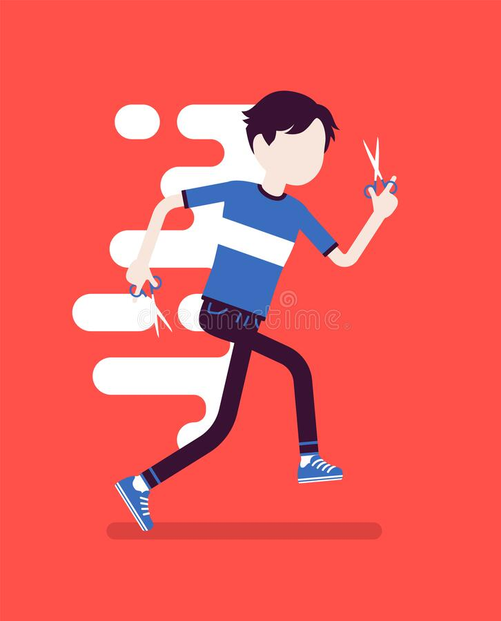

С каждым годом бег с ножницами набирает всё больше последователей по всему миру. Благодаря современным технологиям мы можем позволить себе невообразимое применение данного теперь уже "вида спорта". Без сомнения это увлекательное занатие займёт своё почётное место в истории развития человечества.
